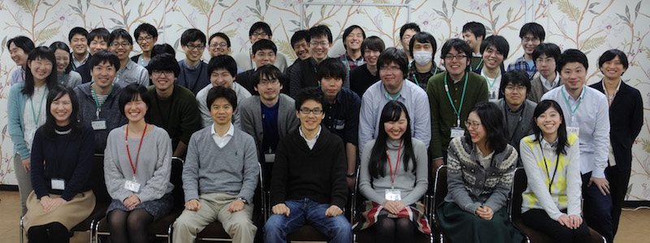

<!doctype html>
<html>
<head>
<meta charset="UTF-8">
<title>Untitled Document</title>
	
<link rel="stylesheet" href="res/css/tool.css" type="text/css" />
	
<style type="text/css">
<!--
.style_main2 {
	color: #FF0000;
	font-weight: bold;
}
.style5 {font-size: 14px}
.style6 {font-family: "Times New Roman", Times, serif}
.style8 {color: #000000}
a:link {
	text-decoration: none;
}
a:visited {
	text-decoration: none;
}
a:hover {
	text-decoration: underline;
}
a:active {
	text-decoration: none;
}
.style13 {color: #FF0033}
.style14 {color: #FF3333}
.style16 {color: #999999}
.style26 {	background-color: #669966;
	border-bottom-color: #663366;
	text-decoration: none;
	font-size: small;
	color: #FFFFFF;
}
.style27 {color: #666666}
.style28 {color: #990033}
.style29 {color: #CCCCCC}
.style30 {
	color: #000066;
	font-weight: bold;
}
.style271 {color: #666666
}
.style291 {color: #CCCCCC
}
-->
</style>
	
</head>

<body>
<p class="style13">北大CHAINでは学振PDの受け入れが可能です．北大CHAINで脳の数理理論に関わる研究を希望される方はご相談ください．</p>
      <p class="style13">北大CHAINは2020年度から大学院教育プログラムを開講します．北海道大学大学院に所属するすべての正規大学院生が参加可能です．詳しくは<a href="https://www.chain.hokudai.ac.jp/index.php/program/">CHAINウェブサイト</a>を参照してください．<a href="https://www.chain.hokudai.ac.jp/index.php/program/"></a></p>
      <p><strong>2020 Apr 1 </strong>北海道大学 人間知・脳・AI研究教育センター （CHAIN）に着任しました．</p>
      <p>&nbsp;</p>
      <p><strong>2020 Feb 12 </strong>Posted an arXiv paper by Aguilera and Moosavi <a href="https://arxiv.org/abs/2002.04309">link</a></p>
      <blockquote>
        <p><strong>A unifying framework for mean field theories of asymmetric kinetic Ising systems.</strong> <em>Miguel Aguilera, S. Amin Moosavi, Hideaki Shimazaki </em><a href="https://arxiv.org/abs/2002.04309">arXiv:2002.04309</a></p>
      </blockquote>
      <p><strong>2020年2月27日　</strong>Cosyne2020で2件のポスター発表をします．</p>
      <blockquote>
        <p><strong>II-23</strong> Inferring network motifs from neural activity using analytic input-output relation of LIF neurons. <em>Safura Rashid Shomali, Majid Nili Ahmadabadi, Seyyed Nader Rasuli, Hideaki Shimazaki</em></p>
        <p><strong>III-80</strong> Effects of structured neural correlations in population coding: beneficial or detrimental?. <em>Seyedamin Moosavi, Magalie Tatischeff, Bingyue Zhu, Hideaki Shimazaki</em>      </p>
      </blockquote>
      <p><strong>2020年2月14日</strong>　国際シンポジウムComputational  Principles in  Active Perception and Reinforcement Learning in the Brainで発表します．  <a href="https://sites.google.com/view/active-perception-rl/">link</a>      </p>
      <p><strong>2020年1月28日</strong>　国際シンポジウム<strong>C</strong>ombining&nbsp;<strong>I</strong>nformation theoretic&nbsp;<strong>P</strong>erspectives on&nbsp;<strong>A</strong>gencyで発表しました．<a href="https://cipa-workshop.weebly.com">link</a></p>
      <p><strong>2</strong><strong>019年12月11日　</strong>MaBouDi, Krishnaさんらの複素独立成分解析の論文をアップデートしました．<a href="https://doi.org/10.1101/112813">link</a>      </p>
      <p><strong>2019年12月7日　</strong>シンギュラリティサロン（東京）で講演しました<strong>．</strong><a href="https://singularity-tokyo.connpass.com/event/154614/">link</a></p>
      <p><strong>2019年11月16日　</strong>シンギュラリティサロン（大阪）で講演しました<strong>．</strong><a href="https://singularity39.peatix.com/view">link</a> </p>
      <p><strong>2019年9月5日　</strong>神経回路学会誌9月号<strong>「知覚の時間構造：認知心理学・神経生理学・計算論の視点から」</strong>を編集しました．</p>
      <p><strong>2019年7月18日　</strong><span class="style13">IJCNN2019の発表でJimmy GaudreaultさんがBest student awardを受賞しました．</span>&nbsp;2 student awards in 803 papers&nbsp;from 1532 submissions.</p>
      <p>&nbsp;</p>
      <p><strong>2019年9月17日　</strong>Talk by Miguel Aguilera et al., 15th Granada Seminar on Computational and Statistical Physics. <a href="http://ergodic.ugr.es/cp/abstracts/2019/Aguilera_abstract.pdf">link</a></p>
      <p><strong>2019年9月18日</strong>　Poster by Safura Rashid Shomali et al., Bernstein Conference.  Berlin, Germany <a href="https://abstracts.g-node.org/conference/BC19/abstracts#/uuid/a2331430-7b22-4ef9-9b1b-01d90e082256">link</a></p>
      
      <p><strong>2019年9月29日　</strong>招待講演　The 7th International Congress on Cognitive Neurodynamics, Italy </p>
      <p>&nbsp;</p>
      <p><strong>2019年8・9月</strong>　生理学研究所で二つのイベントを開催しました．</p>
      <blockquote>
        <blockquote>
          <p><strong>8月31日-9月1日　</strong><a href="http://www.nips.ac.jp/~myoshi/nins_tutorial2019/"><strong>脳の自由エネルギー原理チュートリアル・ワークショップ</strong></a></p>
          <p><strong>9月2日</strong>　生理研研究会 「<strong><a href="http://www.nips.ac.jp/~myoshi/nips_workshop2019/">認知神経科学の先端 脳の理論から身体・世界へ</a></strong>」 </p>
        </blockquote>
</blockquote>
      <p><strong>2019年8月13日</strong>　招待講演　Data science, Statistics &amp; Visualization (DSSV2019), Kyoto</p>
      <p><strong>2019年6月7日 </strong>　<a href="http://www.cog.ist.i.kyoto-u.ac.jp/SalonDuBrain/index.html">〜サロン・ド・脳〜</a>で講演しました．</p>
      <blockquote>
        <blockquote>日時：6月7日（金）15:00 - 18:00
          <p>場所：京都大学医学研究科 先端科学研究棟１F 大会議室 </p>
          <p><strong>神経細胞集団活動の統計解析：脳の熱力学に向けて</strong></p>
          <p>参加登録はこちらからお願います．　<a href="http://www.cog.ist.i.kyoto-u.ac.jp/SalonDuBrain/index.html">link</a>
            <script type="text/javascript">
  document.getElementById('forum_embed').src =
     'https://groups.google.com/forum/embed/?place=forum/kyoto_brain'
     + '&showsearch=true&showpopout=true&showtabs=false'
     + '&parenturl=' + encodeURIComponent(window.location.href);
              </script>
          </p>
        </blockquote>
      </blockquote>
      <p><strong>2019年3月　</strong>OISTで集中講義・セミナーをしました．<a href="https://groups.oist.jp/ncu/event/network-architecture-underlying-sparse-neural-activity-characterized-structured-higher">link</a><a href="https://arxiv.org/abs/1902.11233">　講義資料</a>      </p>
      <p><strong>2019年3月　</strong>システム神経科学スプリングスクールの運営に参加しました．<a href="http://ishiilab.jp/SNSS/SNSS2019/jp/">link</a>      </p>
      <p>&nbsp;</p>
      <p><strong>2018年11月</strong>　Shomali氏の論文をbioRxivに掲載しました．<a href="https://doi.org/10.1101/479956">link</a></p>
      <p><strong>2018年7月　</strong>日本神経回路学会誌９月号「自由エネルギー原理入門」を編集しました．<a href="https://www.jstage.jst.go.jp/browse/jnns/25/3/_contents/-char/ja">link</a></p>
      <p><strong>2018年1月</strong>　ニューラルエンジン仮説がSpringerの書籍のチャプターとして出版されました．<a href="https://doi.org/10.1007/978-3-319-71976-4_11">link</a>      </p>
      <p>&nbsp;</p>
      <p><strong>2017年11月14-15日</strong> 数理モデリングワークショップを開催しました．<a href="http://www.ton.scphys.kyoto-u.ac.jp/~shino/mathmodel/modeling171114.htm">link</a></p>
      <p><strong>2017年10月5日</strong>　LIFニューロンモデルの数理解析論文がJ Computational Neuroscience誌に受理されました．Neural Engine仮説がSpringerから出版される本に掲載されます．</p>
      <p><strong>2017年9月28日</strong>　玉川大学脳科学ワークショップで招待講演を行いました．</p>
      <p></p>
      <p><strong>2017年8月25日　</strong>日本神経回路学会の時限研究会を開催しました．実施報告書が神経回路学会誌から出版されます． [<a href="https://sites.google.com/site/jnnsjigen17/">link</a>]      </p>
      <p><strong>2017年6月22日</strong>　ミツバチ嗅覚の数理モデル論文がPLoS Computational Biology誌に掲載されました．[<a href="https://doi.org/10.1371/journal.pcbi.1005551">link</a>]</p>
      <p><strong>2017年4月3日　</strong>京都大学に着任しました．共同研究講座を立ち上げました．[<a href="http://ci.ist.i.kyoto-u.ac.jp/">link</a>]</p>
      <p><strong>2017年3月4, 5日</strong>　脳科学若手の会合宿で点過程モデリングのワークショップを行いました．[<a href="http://brainsci.jp/blog/2017/03/04/camp2017/">link</a>]</p>
      <p></p>
      <p><strong>2016年12月13日　</strong>Donner, Obermeyer, Shimazaki, <strong>Approximate Inference for Time-varying Interactions and Macroscopic Dynamics of Neural Populations</strong> がPLoS Computational Biologyに受理されました．[link]</p>
      <p><strong>2016年10月20日</strong>　Chrsitian Donnerさんとの仕事がICONIP2016のExcellent paper awardに選ばれました．       </p>
      <p><strong>2016年5月26日　</strong>共著論文がJ Neuroscience誌に掲載されました. [<a href="http://doi.org/10.1523/JNEUROSCI.0230-16.2016">link</a>]</p>
      <p><strong>2016年4月1日</strong> 　共著論文がサイエンス誌に掲載されました．<a href="http://science.sciencemag.org/content/352/6281/87">[link</a>]</p>
      <p>&nbsp;</p>
<p><strong>2015年12月24日</strong> 最近の考えをまとめました．</p>
      <blockquote>
        <p><u>Shimazaki H</u>, <strong>Neurons as an Information-theoretic Engine</strong>. <em>arXiv</em>:1512.07855 [<a href="res/pdf/shimazaki_engine15.pdf">pdf, </a><a href="http://arxiv.org/abs/1512.07855">link</a>] </p>
        <p>脳内の情報統合の基礎に利得制御があります．注意等のフィードバック利得制御により感覚情報を変調する過程が熱機関のように取り扱えることを示した論文です．これによって脳の内部計算の定量化や効率を計算することができます．</p>
    </blockquote>
      <p><strong>2015年7月18日</strong>　統計数理研究所で行う公開講座「<a href="http://www.ism.ac.jp/lectures/27n.html">点過程ネットワークの統計解析入門</a>」の案内がでました．</p>
<p><strong>2015年5月15日　</strong>自然画像解析の論文が受理されました．MaBouDi H, Shimazaki H, Amari S, Soltanian-Zadeh H, &quot;Representation of Higher-order Statistical Structures in Natural Scenes via Spatial Phase Distributions.&quot; Vision Research 2015. [<a href="res/pdf/maboudi_vr15.pdf">pdf</a>]</p>
      <p><strong>2015年5月</strong>　カーネル密度推定論文が著名な神経科学者の研究室で使用され始めています．Hill, Fried  &amp; Koch <a href="http://jn.physiology.org/content/early/2014/12/01/jn.00595.2014">J Neurophysiol2015</a>. Ito,	Zhang,	Witter,	Moser	&amp; Moser <a href="http://www.nature.com/nature/journal/vaop/ncurrent/full/nature14396.html">Nature 2015</a>. Manita, Suzuki, ...,  Larkum &amp;  Murayama <a href="http://www.riken.jp/pr/press/2015/20150522_1/">Neuron 2015</a>.      </p>
      <p><strong>2015年3月19日　</strong>神経細胞のサイレンスと高次統計の関係を明らかにした研究が受理されました．Shimazaki H., Sadeghi K., Ishikawa T., Ikegaya Y. &amp; Toyoizumi T. <strong>Simultaneous silence organizes structured higher-order interactions in neural populations</strong>. <em>Scientific Reports</em> 5, 9821, 2015.  [<a href="http://doi.org/10.1038/srep09821">link</a>] </p>
      <p>&nbsp;</p>
      <p><strong>2014年4月発売</strong> <a href="http://www.medsi.co.jp/kandel/">「カンデル神経科学 第５版」</a><strong>（メディカル・サイエンス・インターナショナル社）</strong>理論神経科学（付録F）の翻訳を担当しました．</p>
<p>&nbsp;</p>
</body>
</html>
